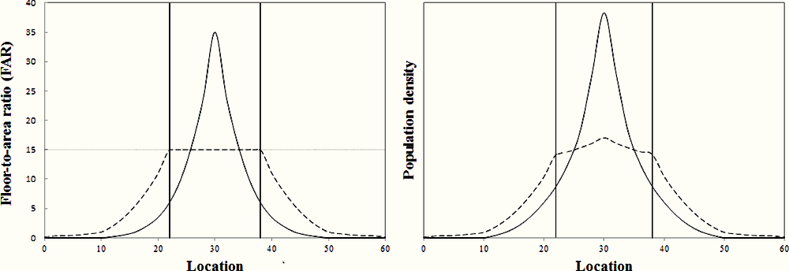

Indian urban regeneration with a Jane Jacobs formula
Over the last few decades urban sprawl has resulted in large scale losses of green space in the global south. In Mumbai, dense vegetation cover reduced by 50% in the recent three decades from 1988 - 2018 [1]. Sprawl also directly connects to the wellbeing of citizens - increasing their exposure to the rising consequences of climate change. Unchecked expansion of grey infrastructure without appropriate tree cover and green spaces results in poor resilience to extreme weather events - from urban heat islands that magnify temperatures to well above thermal comfort [2] and widespread flooding [3] during intense storm or monsoon downpours.
The myriad drivers of urban sprawl [4] include restrictive FSI (Floor Space Index a.k.a Floor Area Ratio, FAR) and other antiquated building regulations e.g. plot to building area ratios. In cities with low building area coverage and low FSI regulations, growth cannot happen in the more productive urban centre and is forced outwards.

Recent years have seen a flurry of regulation changes to increase the allowed FSI in urban areas. However, meaningfully improved urban development cannot be achieved by private, market-led development alone. It must be accompanied by investment in public infrastructure.
Indian cities usually lack good street network connectivity [5] [6] leaving them unable to cope with the expected increase in population and traffic volumes brought about by the FSI changes. Addressing this deficit needs more active management than just changing a number in the building code. During his recent step-by-step analysis of urban intervention in the Indian city of Ahmedabad, Dr. Bimal Patel [7] recommends three additional actions tp accompany an increase in FSI:
- buying un-utilised private land currently languishing in many Indian cities due to building regulations [8] that ossified urban form to low efficiency layouts. This land can be used to add streets that improve street network connectivity or increase existing capacity.
- restricting vehicular entry to side streets. Where required, these side streets can be added by partitioning large blocks into shorter blocks and built with purchased private land.
- ensuring building fronts are set back from the main road for continuity in pedestrian movement. Over time, the setback space can be converted to covered arcades
Though unmentioned, this plan exemplifies the four generators of urban vitality described by Jane Jacobs [9] [10].
- Density. Increasing the FSI incentivises developers to make the most of the land, where land value is high, enabling higher density. Developerss can build up as well as out within the plot - especially if money was made by selling land to the municipality for new streets resulted in a smaller plot to work with for the actual building.
- Mingled buildings. Incremental additions of newer, taller buildings, depending on the pace of development, amidst the older, undeveloped ones creates a more economically diverse neighbourhood.
- Short blocks. Adding new streets that break up a large block resulting in the shorter blocks of Jacobsian preference though these streets are designated for for vehicular ins and outs in Dr. Patel’s design.
- Mixed uses. Creating more floor area in urban zones with higher land prices and demand encourages mixed use - businesses along the more valuable street fronts and residential apartments in the higher floors. With regulations ensuring the street fronts of buildings are un-interrupted by vehicular entry, businesses have the confidence of captialising on pedestrian traffic.
Though Dr. Patel’s project is a design (rather than real life) example, there is hope that his pragmatic advice will catch on among Indian urban planners. With changes like this, Indian cities can hope for a higher quality of urban living than the unbridled urban development of the last few decades. However, the road to urban development in the global south has a long way to go. Urban regeneration must account for water, sanitation and electricity infrastructure as well as transit options, longer and safer pedestrian mobility, and resilience to extreme weather events.
References
Credits
- Post photo by Ivan Bandura on Unsplash